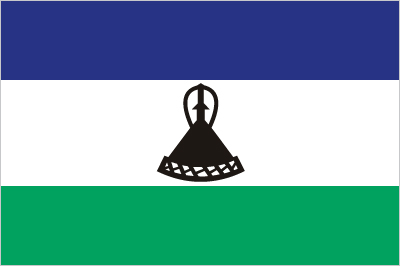
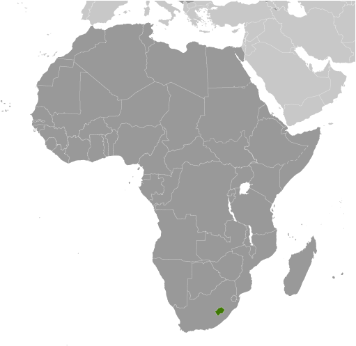
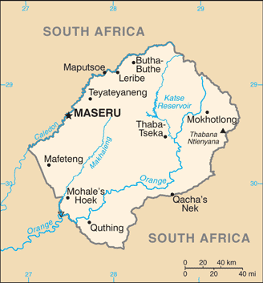

Africa :: LESOTHO
Introduction :: LESOTHO
-
Basutoland was renamed the Kingdom of Lesotho upon independence from the UK in 1966. The Basutho National Party ruled the country during its first two decades. King MOSHOESHOE was exiled in 1990, but returned to Lesotho in 1992 and was reinstated in 1995 and subsequently succeeded by his son, King LETSIE III, in 1996. Constitutional government was restored in 1993 after seven years of military rule. In 1998, violent protests and a military mutiny following a contentious election prompted a brief but bloody intervention by South African and Batswana military forces under the aegis of the Southern African Development Community. Subsequent constitutional reforms restored relative political stability. Peaceful parliamentary elections were held in 2002, but the National Assembly elections in 2007 were hotly contested and aggrieved parties disputed how the electoral law was applied to award proportional seats in the Assembly. In 2012, competitive elections involving 18 parties saw Prime Minister Motsoahae Thomas THABANE form a coalition government - the first in the country's history - that ousted the 14-year incumbent, Pakalitha MOSISILI, who peacefully transferred power the following month. MOSISILI returned to power in snap elections in February 2015 after the collapse of THABANE’s coalition government and an alleged attempted military coup.
Geography :: LESOTHO
-
Southern Africa, an enclave of South Africa29 30 S, 28 30 EAfricatotal: 30,355 sq kmland: 30,355 sq kmwater: 0 sq kmcountry comparison to the world: 142slightly smaller than Marylandtotal: 1,106 kmborder countries (1): South Africa 1,106 km0 km (landlocked)none (landlocked)temperate; cool to cold, dry winters; hot, wet summersmostly highland with plateaus, hills, and mountainsmean elevation: 2,161 melevation extremes: lowest point: junction of the Orange and Makhaleng Rivers 1,400 mhighest point: Thabana Ntlenyana 3,482 mwater, agricultural and grazing land, diamonds, sand, clay, building stoneagricultural land: 76.1%arable land 10.1%; permanent crops 0.1%; permanent pasture 65.9%forest: 1.5%other: 22.4% (2011 est.)30 sq km (2012)relatively higher population density in the western half of the nation, with the capital of Maseru, and the smaller cities of Mafeteng, Teyateyaneng, and Leribe attracting the most peopleperiodic droughtspopulation pressure forcing settlement in marginal areas results in overgrazing, severe soil erosion, and soil exhaustion; desertification; Highlands Water Project controls, stores, and redirects water to South Africaparty to: Biodiversity, Climate Change, Climate Change-Kyoto Protocol, Desertification, Endangered Species, Hazardous Wastes, Law of the Sea, Marine Life Conservation, Ozone Layer Protection, Wetlandssigned, but not ratified: none of the selected agreementslandlocked, completely surrounded by South Africa; mountainous, more than 80% of the country is 1,800 m above sea level
People and Society :: LESOTHO
-
1,958,042note: estimates for this country explicitly take into account the effects of excess mortality due to AIDS; this can result in lower life expectancy, higher infant mortality, higher death rates, lower population growth rates, and changes in the distribution of population by age and sex than would otherwise be expected (July 2017 est.)country comparison to the world: 148noun: Mosotho (singular), Basotho (plural)adjective: BasothoSotho 99.7%, Europeans, Asians, and other 0.3%Sesotho (official) (southern Sotho), English (official), Zulu, XhosaChristian 80%, indigenous beliefs 20%Lesotho faces great socioeconomic challenges. More than half of its population lives below the property line, and the country’s HIV/AIDS prevalence rate is the second highest in the world. In addition, Lesotho is a small, mountainous, landlocked country with little arable land, leaving its population vulnerable to food shortages and reliant on remittances. Lesotho’s persistently high infant, child, and maternal mortality rates have been increasing during the last decade, according to the last two Demographic and Health Surveys. Despite these significant shortcomings, Lesotho has made good progress in education; it is on-track to achieve universal primary education and has one of the highest adult literacy rates in Africa.Lesotho’s migration history is linked to its unique geography; it is surrounded by South Africa with which it shares linguistic and cultural traits. Lesotho at one time had more of its workforce employed outside its borders than any other country. Today remittances equal about 17% of its GDP. With few job options at home, a high rate of poverty, and higher wages available across the border, labor migration to South Africa replaced agriculture as the prevailing Basotho source of income decades ago. The majority of Basotho migrants were single men contracted to work as gold miners in South Africa. However, migration trends changed in the 1990s, and fewer men found mining jobs in South Africa because of declining gold prices, stricter immigration policies, and a preference for South African workers.Although men still dominate cross-border labor migration, more women are working in South Africa, mostly as domestics, because they are widows or their husbands are unemployed. Internal rural-urban flows have also become more frequent, with more women migrating within the country to take up jobs in the garment industry or moving to care for loved ones with HIV/AIDS. Lesotho’s small population of immigrants is increasingly composed of Taiwanese and Chinese migrants who are involved in the textile industry and small retail businesses.0-14 years: 32.12% (male 316,106/female 312,869)15-24 years: 19.43% (male 181,481/female 199,039)25-54 years: 37.94% (male 362,798/female 380,001)55-64 years: 5.01% (male 52,293/female 45,828)65 years and over: 5.5% (male 55,163/female 52,464) (2017 est.)total dependency ratio: 66.9youth dependency ratio: 59.5elderly dependency ratio: 7.4potential support ratio: 13.5 (2015 est.)total: 24.2 yearsmale: 24.2 yearsfemale: 24.2 years (2017 est.)country comparison to the world: 1610.28% (2017 est.)country comparison to the world: 17224.6 births/1,000 population (2017 est.)country comparison to the world: 5015 deaths/1,000 population (2017 est.)country comparison to the world: 1-6.8 migrant(s)/1,000 population (2017 est.)country comparison to the world: 204relatively higher population density in the western half of the nation, with the capital of Maseru, and the smaller cities of Mafeteng, Teyateyaneng, and Leribe attracting the most peopleurban population: 28.4% of total population (2017)rate of urbanization: 2.85% annual rate of change (2015-20 est.)MASERU (capital) 267,000 (2014)at birth: 1.03 male(s)/female0-14 years: 1.01 male(s)/female15-24 years: 0.91 male(s)/female25-54 years: 0.96 male(s)/female55-64 years: 1.14 male(s)/female65 years and over: 1.03 male(s)/femaletotal population: 0.98 male(s)/female (2016 est.)21 yearsnote: median age at first birth among women 25-29 (2014 est.)487 deaths/100,000 live births (2015 est.)country comparison to the world: 22total: 46.1 deaths/1,000 live birthsmale: 49.7 deaths/1,000 live birthsfemale: 42.4 deaths/1,000 live births (2017 est.)country comparison to the world: 37total population: 53 yearsmale: 53 yearsfemale: 53.1 years (2017 est.)country comparison to the world: 2162.63 children born/woman (2017 est.)country comparison to the world: 7460.2% (2014)10.6% of GDP (2014)country comparison to the world: 191.3 beds/1,000 population (2006)improved:urban: 94.6% of populationrural: 77% of populationtotal: 81.8% of populationunimproved:urban: 5.4% of populationrural: 23% of populationtotal: 18.2% of population (2015 est.)improved:urban: 37.3% of populationrural: 27.6% of populationtotal: 30.3% of populationunimproved:urban: 62.7% of populationrural: 72.4% of populationtotal: 69.7% of population (2015 est.)25% (2016 est.)country comparison to the world: 2330,000 (2016 est.)country comparison to the world: 199,900 (2016 est.)country comparison to the world: 2116.6% (2016)country comparison to the world: 12210.3% (2014)country comparison to the world: 5413% of GDP (2008)country comparison to the world: 1definition: age 15 and over can read and writetotal population: 79.4%male: 70.1%female: 88.3% (2015 est.)total: 11 yearsmale: 10 yearsfemale: 11 years (2014)total: 34.4%male: NAfemale: NA (2013 est.)country comparison to the world: 18
Government :: LESOTHO
-
conventional long form: Kingdom of Lesothoconventional short form: Lesotholocal long form: Kingdom of Lesotholocal short form: Lesothoformer: Basutolandetymology: the name translates as "Land of the Sesotho Speakers"parliamentary constitutional monarchyname: Maserugeographic coordinates: 29 19 S, 27 29 Etime difference: UTC+2 (7 hours ahead of Washington, DC, during Standard Time)10 districts; Berea, Butha-Buthe, Leribe, Mafeteng, Maseru, Mohale's Hoek, Mokhotlong, Qacha's Nek, Quthing, Thaba-Tseka4 October 1966 (from the UK)Independence Day, 4 October (1966)history: previous 1959, 1967; latest adopted 2 April 1993 (effectively restoring the 1967 version)amendments: proposed by Parliament; passage of amendments affecting constitutional provisions including fundamental rights and freedoms, sovereignty of the kingdom, the office of the king, and powers of Parliament requires a majority vote by the National Assembly, approval by the Senate, approval in a referendum by a majority of qualified voters, and assent by the king; passage of amendments other than those specified provisions requires at least a two-thirds majority vote in both Parliament houses; amended several times, last in 2011 (2017)mixed legal system of English common law and Roman-Dutch law; judicial review of legislative acts in High Court and Court of Appealaccepts compulsory ICJ jurisdiction with reservations; accepts ICCt jurisdictioncitizenship by birth: yescitizenship by descent: yesdual citizenship recognized: noresidency requirement for naturalization: 5 years18 years of age; universalchief of state: King LETSIE III (since 7 February 1996); note - King LETSIE III formerly occupied the throne from November 1990 to February 1995 while his father was in exilehead of government: Prime Minister Thomas Motsoahae Thomas THABANE (since 16 June 2017)cabinet: consists of the Prime Minister, appointed by the King on the advice of the Council of State, and 25 other Ministerselections/appointments: the monarchy is hereditary, but under the terms of the constitution that came into effect after the March 1993 election, the monarch is a "living symbol of national unity" with no executive or legislative powers; under traditional law, the college of chiefs has the power to depose the monarch, to determine next in line of succession, or to serve as regent in the event that a successor is not of mature age; following legislative elections, the leader of the majority party or majority coalition in the Assembly automatically becomes prime ministerdescription: bicameral Parliament consists of the Senate (33 seats; 22 principal chiefs and 11 other senators nominated by the king with the advice of the Council of State, a 13-member body of key government and non-government officials; members serve 5-year terms) and the National Assembly (120 seats; 80 members directly elected in single-seat constituencies by simple majority vote and 40 elected through proportional representation; members serve 5-year terms)elections: last held on 3 June 2017 (next to be held in 2022)election results: National Assembly - percent of votes by party - ABC 40.5%, DC 25.8%, LCD 9.0%, AD 7.3%, MEC 5.1%, BNP 4.1, PFD 2.3%, other 5.9%; seats by party - ABC 48, DC 30, LCD 11, AD 9, MEC 6, BNP 5, PFD 3, other 5, vacant 3highest court(s): Court of Appeal (consists of the court president, such number of justices of appeal as set by Parliament, and the Chief Justice and the puisne judges of the High Court ex officio); High Court (consists of the chief justice and such number of puisne judges as set by Parliament); note - both the Court of Appeal and the High Court have jurisdiction in constitutional issuesjudge selection and term of office: Court of Appeal president and High Court chief justice appointed by the monarch on the advice of the prime minister; puisne judges appointed by the monarch on advice of the Judicial Service Commission, an independent body of judicial officers and officials designated by the monarch; judges of both courts can serve until age 75subordinate courts: Magistrate Courts; customary or traditional courts; military courtsAll Basotho Convention or ABC [Motsoahae Thomas THABANE]Alliance of Democrats or AD [Monyane MOLELEKI]Basotho Congress Party or BCP [Thulo MAHLAKENG]Basotho National Party or BNP [Thesele MASERIBANE]Democratic Congress or DC [Pakalitha MOSISILI]Lesotho Congress for Democracy or LCD [Mothetjoa METSING]Lesotho Peoples Congress or LPC [Mabusetsa MAKHARILELE]Marematlou Freedom Party or MFP [Tlhoriso LEKATSA]Movement of Economic Change or MEC [Selibe MOCHOBOROANE]National Independent Party or NIP [Kimetso MATHABA]Popular Front for Democracy of PFD [Lekhetho RAKUOANE]Reformed Congress of Lesotho or RCL [Keketso RANTSO]Truth Reconciliation Unity or TRU [Tlali KHASU]Media Institute of Southern Africa or MISA, Lesotho chapter [Tsebo MATASA] (media freedom advocates)ACP, AfDB, AU, C, CD, FAO, G-77, IAEA, IBRD, ICAO, ICCt, ICRM, IDA, IFAD, IFC, IFRCS, ILO, IMF, Interpol, IOC, IOM, IPU, ISO (correspondent), ITU, MIGA, NAM, OPCW, SACU, SADC, UN, UNAMID, UNCTAD, UNESCO, UNHCR, UNIDO, UNWTO, UPU, WCO, WFTU (NGOs), WHO, WIPO, WMO, WTOchief of mission: Ambassador Eliachim Molapi SEBATANE (since 18 January 2012)chancery: 2511 Massachusetts Avenue NW, Washington, DC 20008telephone: [1] (202) 797-5533FAX: [1] (202) 234-6815chief of mission: Ambassador Matthew T. HARRINGTON (October 2014)embassy: 254 Kingsway Road, Maseru West (Consular Section)mailing address: P.O. Box 333, Maseru 100, Lesothotelephone: [266] 22 312 666FAX: [266] 22 310 116three horizontal stripes of blue (top), white, and green in the proportions of 3:4:3; the colors represent rain, peace, and prosperity respectively; centered in the white stripe is a black Basotho hat representing the indigenous people; the flag was unfurled in October 2006 to celebrate 40 years of independencemokorotio (Basotho hat); national colors: blue, white, green, blackname: "Lesotho fatse la bo ntat'a rona" (Lesotho, Land of Our Fathers)lyrics/music: Francois COILLARD/Ferdinand-Samuel LAURnote: adopted 1967; music derives from an 1823 Swiss songbook
Economy :: LESOTHO
-
Small, mountainous, and completely landlocked by South Africa, Lesotho depends on a narrow economic base of textile manufacturing, agriculture, remittances, and regional customs revenue. About three-fourths of the people live in rural areas and engage in animal herding and subsistence agriculture, although Lesotho produces less than 20% of the nation's demand for food. Agriculture is vulnerable to weather and climate variability.Lesotho relies on South Africa for much of its economic activity; Lesotho imports 90% of the goods it consumes from South Africa, including most agricultural inputs. Households depend heavily on remittances from family members working in South Africa in mines, on farms, and as domestic workers, though mining employment has declined substantially since the 1990s. Lesotho is a member of the Southern Africa Customs Union (SACU), and revenues from SACU accounted for roughly 44% of total government revenue in 2014. Lesotho also gains royalties from the South African Government for water transferred to South Africa from a dam and reservoir system in Lesotho. However, the government continues to strengthen its tax system to reduce dependency on customs duties and other transfers.The government maintains a large presence in the economy - government consumption accounted for 27% of GDP in 2016. The government remains Lesotho's largest employer; in 2014-15, the government wage bill rose to 21% of GDP – the largest in sub-Saharan Africa. Lesotho's largest private employer is the textile and garment industry - approximately 36,000 Basotho, mainly women, work in factories producing garments for export to South Africa and the US. Diamond mining in Lesotho has grown in recent years and accounts for nearly 9% of GDP. Lesotho managed steady GDP growth at an average of 4.5% from 2010 to 2014 but poverty remains widespread around 57% of the total population.$6.996 billion (2016 est.)$6.749 billion (2015 est.)$6.512 billion (2014 est.)note: data are in 2016 dollarscountry comparison to the world: 166$2.264 billion (2016 est.)2.4% (2016 est.)2.5% (2015 est.)3.4% (2014 est.)country comparison to the world: 99$3,600 (2016 est.)$3,600 (2015 est.)$3,500 (2014 est.)note: data are in 2016 dollarscountry comparison to the world: 18221% of GDP (2016 est.)23.8% of GDP (2015 est.)20.1% of GDP (2014 est.)country comparison to the world: 96household consumption: 78.4%government consumption: 29.2%investment in fixed capital: 31.7%investment in inventories: -15.5%exports of goods and services: 43.1%imports of goods and services: -66.9% (2016 est.)agriculture: 5.4%industry: 33.1%services: 61.5% (2016 est.)corn, wheat, pulses, sorghum, barley; livestockfood, beverages, textiles, apparel assembly, handicrafts, construction, tourism5.6% (2016 est.)country comparison to the world: 41922,400 (2016 est.)country comparison to the world: 148agriculture: 86%industry and services: 14%note: most of the resident population is engaged in subsistence agriculture; roughly 35% of the active male wage earners work in South Africa (2002 est.)28.1% (2014 est.)25% (2008 est.)country comparison to the world: 20157% (2016 est.)lowest 10%: 1%highest 10%: 39.4% (2003)63.2 (1995)56 (1986-87)country comparison to the world: 1revenues: $917.8 millionexpenditures: $1.081 billion (2016 est.)40.5% of GDP (2016 est.)country comparison to the world: 37-7.2% of GDP (2016 est.)country comparison to the world: 18647.8% of GDP (2016 est.)49.5% of GDP (2015 est.)country comparison to the world: 1021 April - 31 March6.4% (2016 est.)3.2% (2015 est.)country comparison to the world: 1846.75% (2 February 2016)6.25% (31 December 2015)country comparison to the world: 5311.58% (31 December 2016 est.)10.59% (31 December 2015 est.)country comparison to the world: 70$356.3 million (31 December 2016 est.)$340.6 million (31 December 2015 est.)country comparison to the world: 173$725.2 million (31 December 2016 est.)$652.1 million (31 December 2015 est.)country comparison to the world: 177$230.9 million (31 December 2016 est.)$48.89 million (31 December 2015 est.)country comparison to the world: 182$-174 million (2016 est.)$-84 million (2015 est.)country comparison to the world: 82$894 million (2016 est.)$928.5 million (2015 est.)country comparison to the world: 160manufactures (clothing, footwear), wool and mohair, food and live animals, electricity, water, diamondsSouth Africa 56.5%, US 35.4% (2016)$1.613 billion (2016 est.)$1.73 billion (2015 est.)country comparison to the world: 167food; building materials, vehicles, machinery, medicines, petroleum productsSouth Africa 84.5% (2016)$925.2 million (31 December 2016 est.)$904.2 million (31 December 2015 est.)country comparison to the world: 127$921.3 million (31 December 2016 est.)$879.9 million (31 December 2015 est.)country comparison to the world: 168$456.5 million (31 December 2016 est.)$376.1 million (31 December 2015 est.)country comparison to the world: 124maloti (LSL) per US dollar -14.7096 (2016 est.)14.71 (2015 est.)12.76 (2014 est.)10.85 (2013 est.)8.2 (2012 est.)
Energy :: LESOTHO
-
population without electricity: 1,700,000electrification - total population: 17%electrification - urban areas: 43%electrification - rural areas: 8% (2013)600 million kWh (2015 est.)country comparison to the world: 166763 million kWh (2015 est.)country comparison to the world: 1630 kWh (2016 est.)country comparison to the world: 161205 million kWh (2015 est.)country comparison to the world: 9280,000 kW (2015 est.)country comparison to the world: 1840% of total installed capacity (2015 est.)country comparison to the world: 2150% of total installed capacity (2015 est.)country comparison to the world: 130100% of total installed capacity (2015 est.)country comparison to the world: 10% of total installed capacity (2015 est.)country comparison to the world: 1940 bbl/day (2016 est.)country comparison to the world: 1610 bbl/day (2014 est.)country comparison to the world: 1540 bbl/day (2014 est.)country comparison to the world: 1510 bbl (1 January 2017 es)country comparison to the world: 1580 bbl/day (2014 est.)country comparison to the world: 1655,000 bbl/day (2015 est.)country comparison to the world: 1780 bbl/day (2014 est.)country comparison to the world: 1725,121 bbl/day (2014 est.)country comparison to the world: 1660 cu m (2013 est.)country comparison to the world: 1610 cu m (2013 est.)country comparison to the world: 2020 cu m (2013 est.)country comparison to the world: 1390 cu m (2013 est.)country comparison to the world: 1480 cu m (1 January 2014 es)country comparison to the world: 163300,000 Mt (2013 est.)country comparison to the world: 189
Communications :: LESOTHO
-
total subscriptions: 41,158subscriptions per 100 inhabitants: 2 (July 2016 est.)country comparison to the world: 161total: 2,282,917subscriptions per 100 inhabitants: 117 (July 2016 est.)country comparison to the world: 151general assessment: rudimentary system consisting of a modest number of landlines, a small microwave radio relay system, and a small radiotelephone communication system; mobile-cellular telephone system is expandingdomestic: Econet Telecom Lesotho provides telecom services; fixed-line density is low; mobile-cellular service dominates the market with a subscribership now over 115 per 100 personsinternational: country code - 266; satellite earth station - 1 Intelsat (Atlantic Ocean) (2016)1 state-owned TV station and 2 state-owned radio stations; government controls most private broadcast media; satellite TV subscription service available; transmissions of multiple international broadcasters obtainable (2008).lstotal: 534,360percent of population: 27.4% (July 2016 est.)country comparison to the world: 169
Transportation :: LESOTHO
-
7P (2016)24 (2013)country comparison to the world: 132total: 3over 3,047 m: 1914 to 1,523 m: 1under 914 m: 1 (2017)total: 21914 to 1,523 m: 5under 914 m: 16 (2013)total: 5,940 kmpaved: 1,069 kmunpaved: 4,871 km (2011)country comparison to the world: 150
Military and Security :: LESOTHO
-
1.85% of GDP (2016)1.89% of GDP (2015)1.89% of GDP (2014)1.89% of GDP (2013)1.99% of GDP (2012)country comparison to the world: 43Lesotho Defense Force (LDF): Army (includes Air Wing) (2012)18-24 years of age for voluntary military service; no conscription; women serve as commissioned officers (2012)Lesotho's declared policy for its military is the maintenance of the country's sovereignty and the preservation of internal security; in practice, external security is guaranteed by South Africa
Transnational Issues :: LESOTHO
-
South Africa has placed military units to assist police operations along the border of Lesotho, Zimbabwe, and Mozambique to control smuggling, poaching, and illegal migrationcurrent situation: Lesotho is a source, transit, and destination country for women and children subjected to forced labor and sex trafficking and for men subjected to forced labor; in Lesotho and South Africa, Basotho women and children are subjected to domestic servitude, and Basotho children increasingly endure commercial sexual exploitation; some Basotho men who voluntarily migrate to South Africa for work become victims of forced labor in agriculture and mining or are coerced into committing crimes; foreign nationals continue to traffic fellow citizens in Lesothotier rating: Tier 2 Watch List – Lesotho does not fully comply with the minimum standards for the elimination of trafficking; however, it is making significant efforts to do so; in 2014, Lesotho was granted a waiver from an otherwise required downgrade to Tier 3 because its government has a written plan that, if implemented would constitute making significant efforts to bring itself into compliance with the minimum standards for the elimination of trafficking; the government failed to initiate any prosecutions against alleged traffickers and has not convicted any offenders under the 2011 anti-trafficking act, which remains unimplemented for a fifth year; authorities did not develop formal victim identification and referral procedures, did not establish victim care centers, as required under the 2011 anti-trafficking act, and did not support NGOs offering victims protective services (2015)